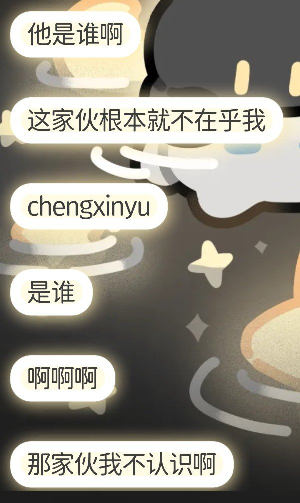

時璃風医詩🌈🏳️🌈
@hagishigure
@hhh84672361 @tatanakots 你知道我屏蔽你的唯一原因是什么吗。
你愚蠢的相信了一个连和程梓语一起偷寒涟漪东西的人都不记得这个人叫什么的人的话（台下传来笑声）。
我再告诉你小鱼干对我真实姓名获取的唯一渠道是，骗我当时一个亲友说关心我（台下再次传来笑声）。
所以无条件反对寒涟漪的人不是蠢就是坏。
我早说蠢人应该图。

eabab🪺🍥💙💛🇵🇸🇯🇵
@hhh84672361
@tatanakots @hagishigure 这个推主是贩毒二进宫实刑三年，九个月出狱，有明确点人（所谓立功）表现的中专肄业男子梁皓杰，你和他吵啥